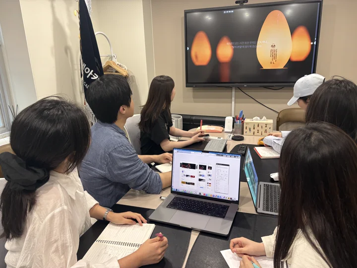
I start where users get lost.
보기 좋은 화면보다 헤매지 않는 화면이 먼저라고 생각합니다.
그래서 사용자가 어디서 멈추고, 무엇을 못 찾고, 왜 되돌아가는지를 먼저 봅니다.
화면을 그리기 전에 그 문제가 정말 존재하는지부터 확인합니다.
JW
FIRST
DESIGN STUDIO
모두가 모든 것을 잘한다고 말하는 시대에, 저는 하나를 깊게 팝니다. 브랜드의 감성이 사용자 경험이 되는 순간을요. 자기 디자인을 직접 구현해 검증하는 디자이너는 드뭅니다. 제 화면은 "구현되면 예쁠 것"이 아니라 이미 작동하는 디자인입니다. 디자인의 전 과정을 한 사람의 손으로 완성합니다.
About me MY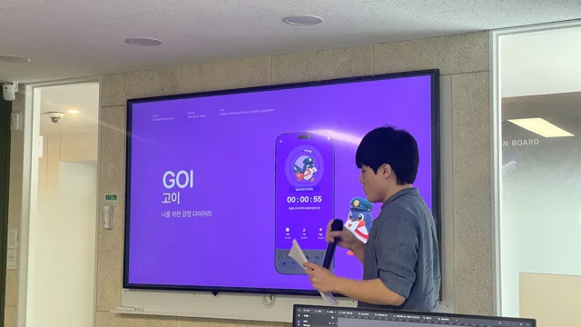
가만히 있으면 중간밖에 못 간다고 믿습니다.
남들이 만류할 때 먼저 손을 들었고, 그 선택이 늘 저를 가장 멀리 데려갔습니다.
보기 좋은 화면보다 헤매지 않는 화면을 먼저 만듭니다.
시안이 아니라, 사용자가 목적에 닿을 때까지 작동하는 결과로 증명합니다.
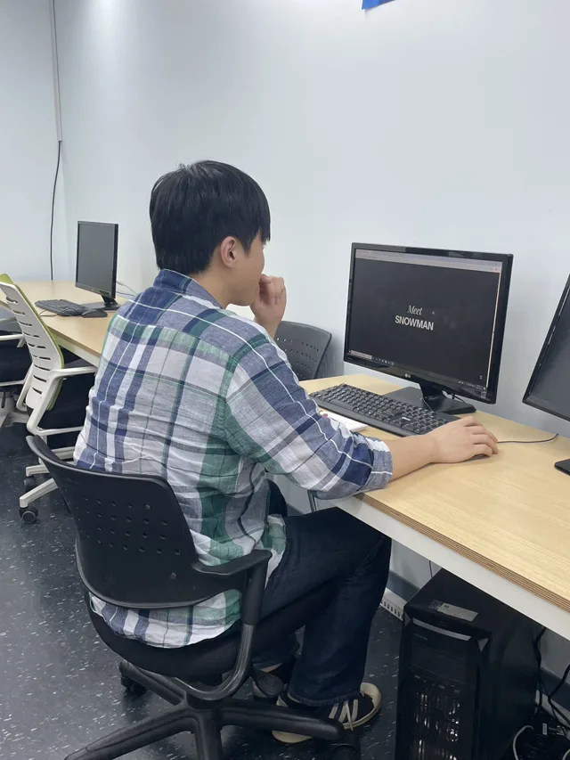
디자인과 개발 사이, 사람과 사람 사이를 잇습니다.
개발의 언어를 이해하는 디자이너가 팀 전체의 속도를 바꾼다고 믿습니다.
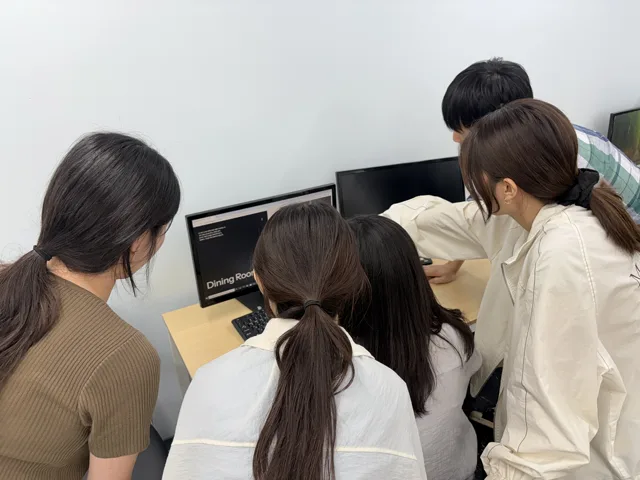

보기 좋은 화면보다 헤매지 않는 화면이 먼저라고 생각합니다.
그래서 사용자가 어디서 멈추고, 무엇을 못 찾고, 왜 되돌아가는지를 먼저 봅니다.
화면을 그리기 전에 그 문제가 정말 존재하는지부터 확인합니다.
모든 걸 해결하려다 아무것도 바꾸지 못하는 경우를 많이 봤습니다.
그래서 가장 아픈 지점 하나를 골라 한 문장으로 정의하는 데 시간을 씁니다.
정의가 선명해지면 그다음 결정들은 훨씬 빨라집니다.
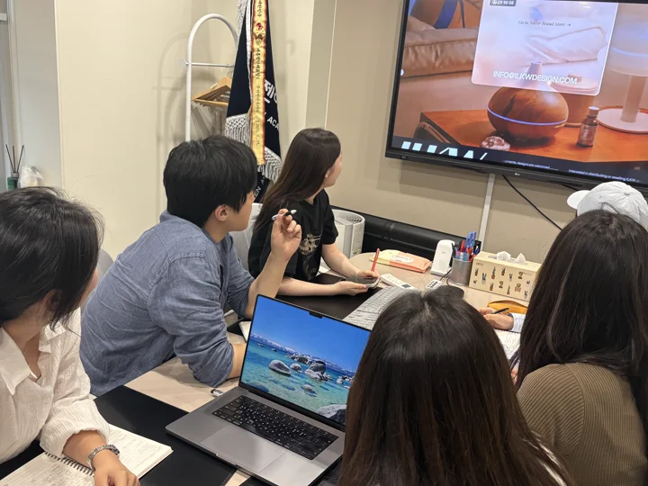
시안에서 멈추지 않고 직접 구현해 화면을 움직이게 만듭니다.
눌렀을 때의 반응, 기다리는 순간, 예외 상황까지 만들어봐야 진짜 문제가 드러납니다.
그 지점에서 디자인은 한 번 더 바뀝니다.
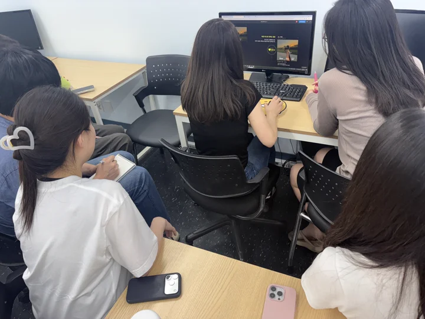
취향으로 끝내지 않고 직접 써보며 검증합니다.
휴리스틱 평가로 기준을 세우고, 사용자가 목적에 닿을 때까지 고칩니다.
‘예쁘다’가 아니라 ‘작동한다’로 증명하는 것이 제 일입니다.
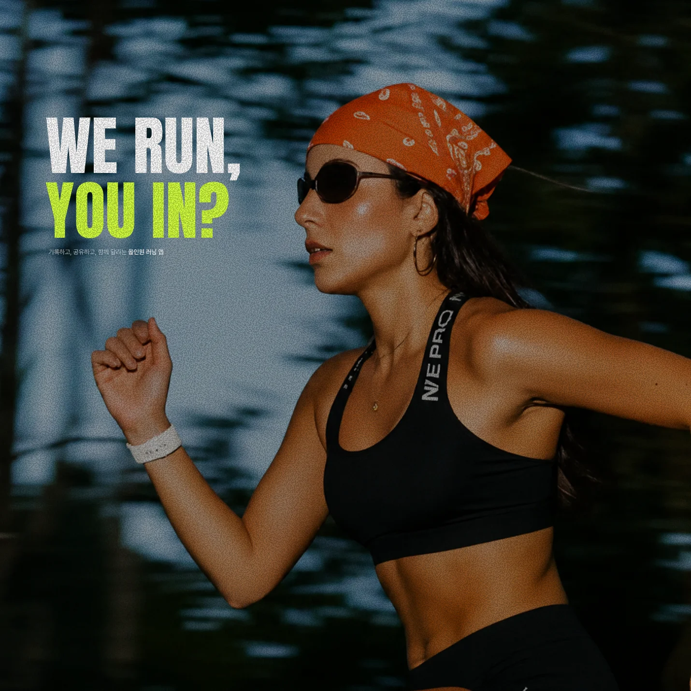
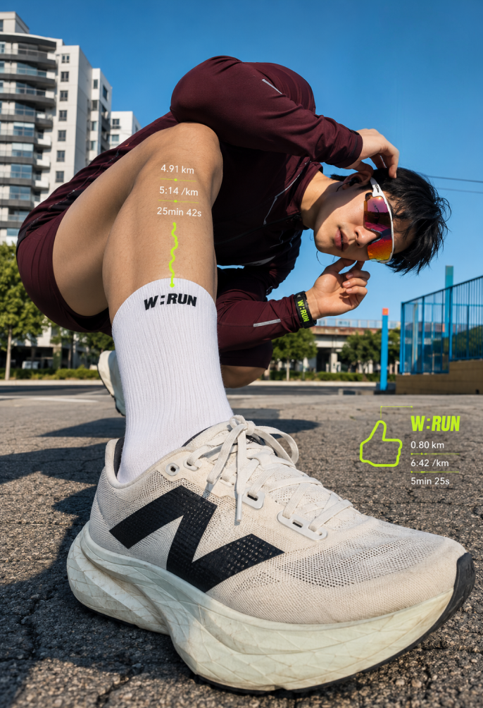
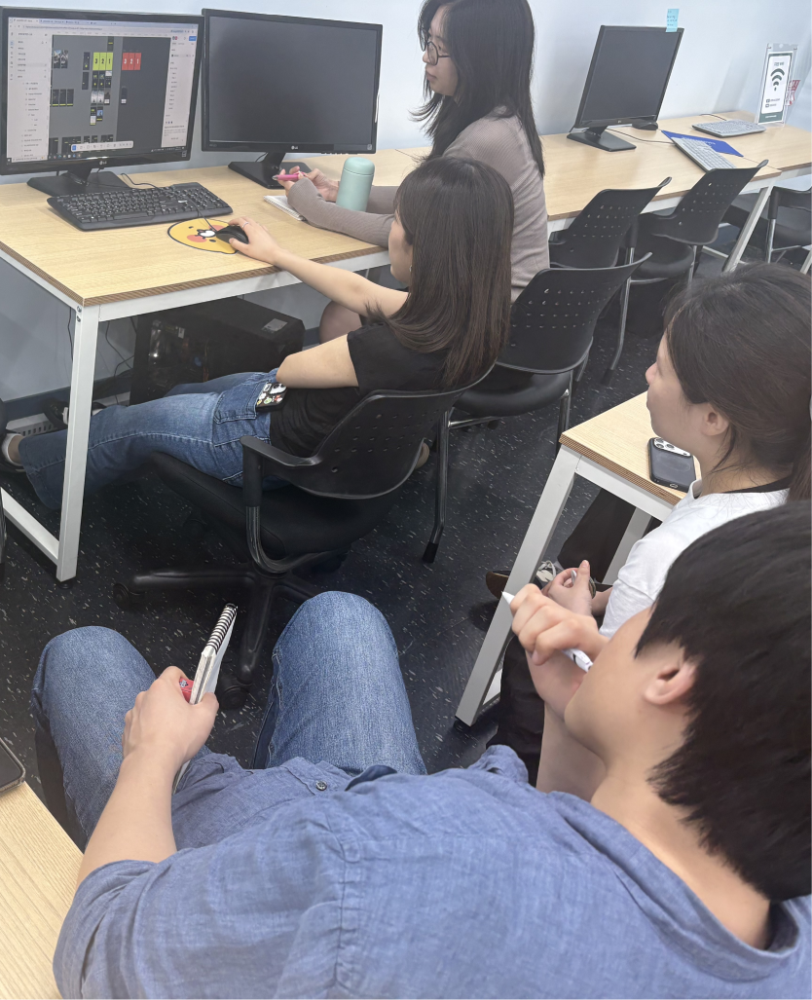
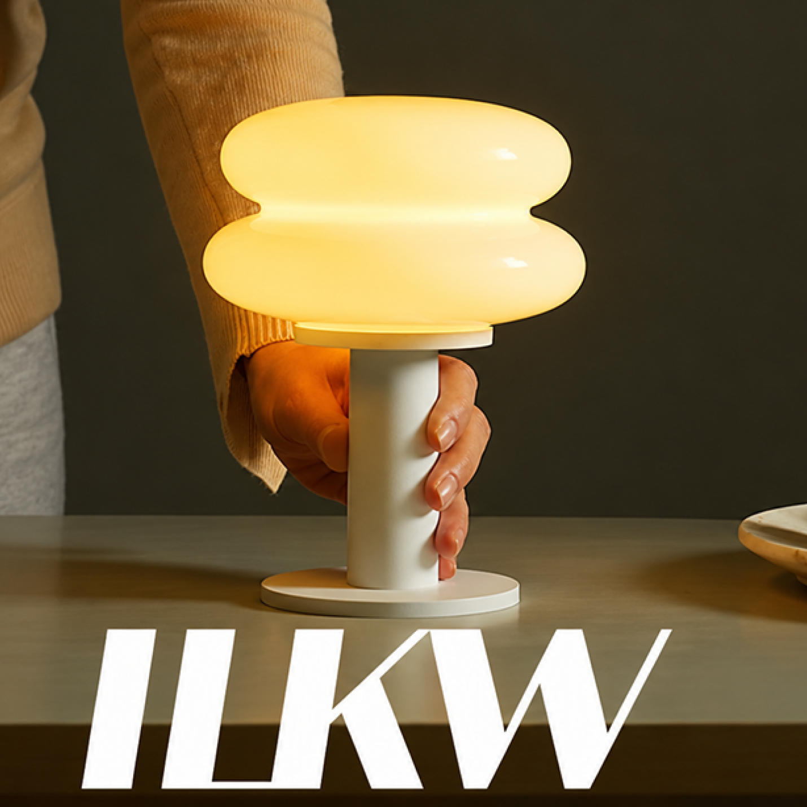
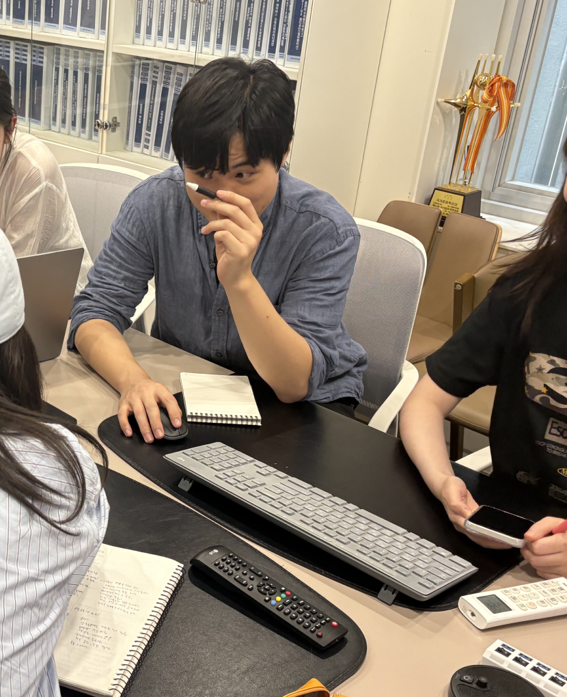
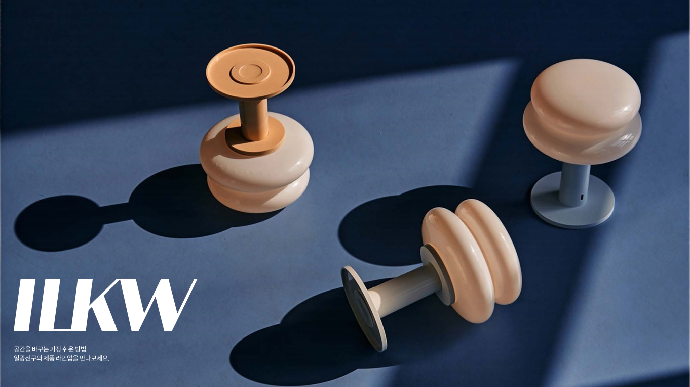
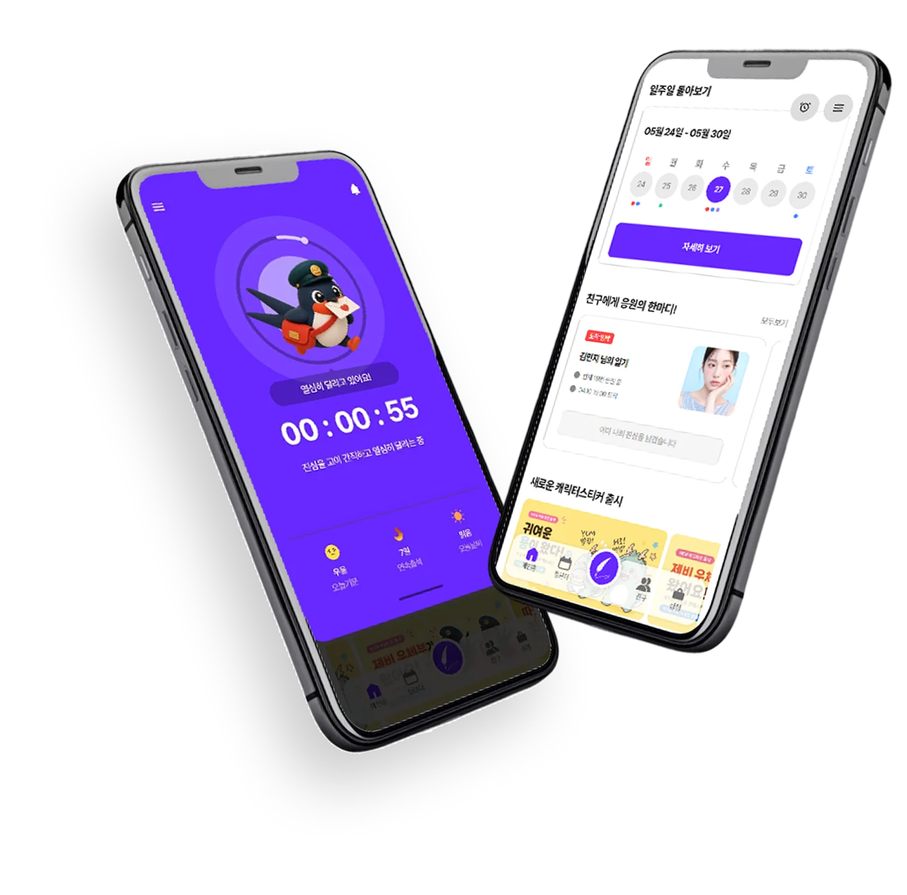
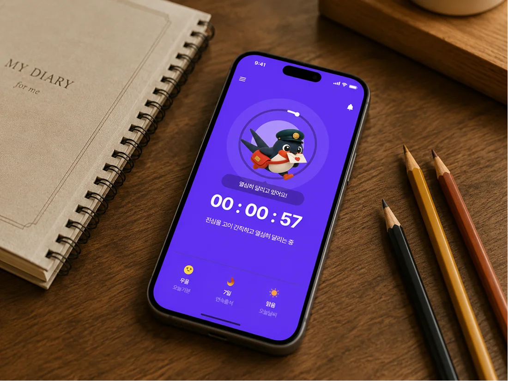
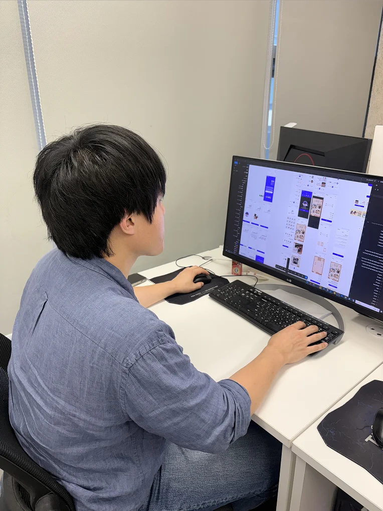